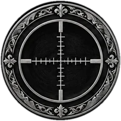

Valve e competitivos7 jogosQuase todos leves.
- Counter-Strike 2
cs2.exepacote próprio - Dota 2
dota2.exe - Deadlock
deadlock.exe - Team Fortress 2
tf_win64.exe - Left 4 Dead 2
left4dead2.exe - Portal 2 e jogos Source
portal2.exe +1 - Garry's Mod
gmod.exe